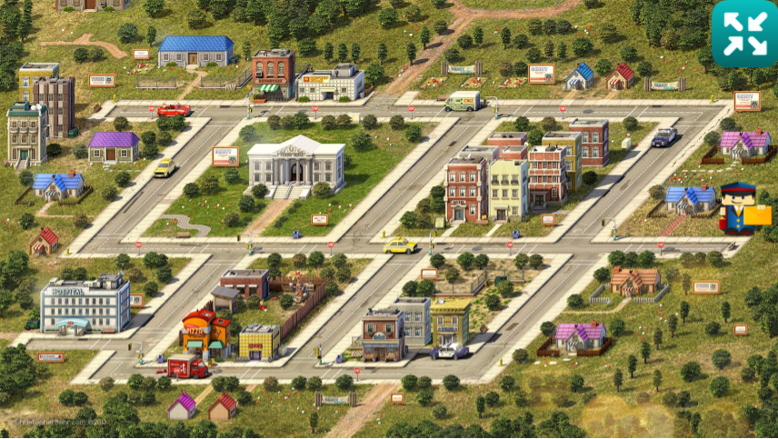
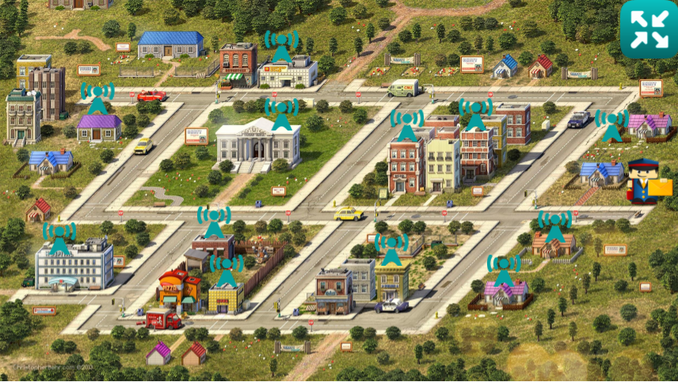
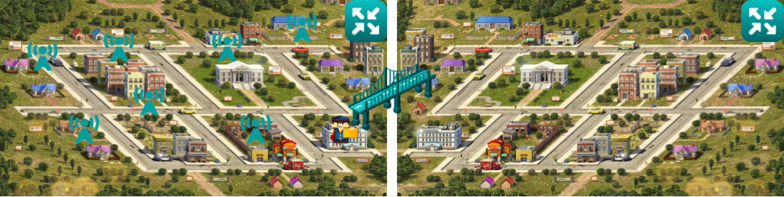
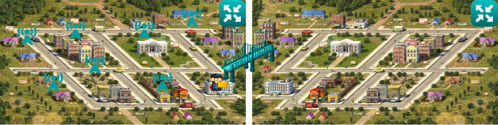

docker networking deepdive
Created by Oded Priva
let't build the lab
hands on


The Open Systems Interconnection model (OSI model), published in 1984, is a conceptual model that characterizes and standardizes the communication functions of a telecommunication or computing system without regard to their underlying internal structure and technology
The TCP/IP protocol suite maps to a four-layer conceptual model known as the DARPA model, which was named after the U.S. government agency that initially developed TCP/IP
How network routing works ?
OR,
let's send a letter.
meet sepia hills


let's send another one
now, lets send it to grayscale

 
